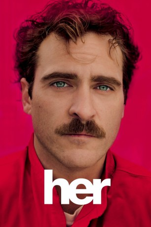

#126 Her
Auszeichnungen: 1 Oscars gewonnen für 4 Oscars nominiert 1 GoldenGlobes gewonnen
 gesehen am 09.03.2015
gesehen am 09.03.2015
 
 IMDB-Wertung: 8.0 / 10
IMDB-Wertung: 8.0 / 10  Metascore: 90
Metascore: 90 
In was verliebt man sich bei seinem Gegenüber zuerst? Die Augen, das Gesicht, die Hände, die Stimme? Im Falle von Theodore Twombly ist es die Stimme. Ihm bleibt auch nichts anderes als die Stimme, denn Samantha ist körperlos. Sie ist die Stimme von Theodores neuem Betriebssystem, das über eine künstliche Intelligenz verfügt – und anscheinend auch über Emotionen. Bis vor kurzem noch trudelte Theodore, professioneller Verfasser einfühlsamer Briefe für Kunden, denen die passenden Worte fehlen, recht haltlos durchs Leben, nachdem seine langjährige Beziehung mit Catherine in die Brüche gegangen ist. Doch zu seiner Verwunderung entwickelt Theodore zur Computerstimme Samantha Gefühle, die schnell über eine bloße Schwärmerei hinausgehen. Von seiner Umwelt kritisch beäugt muss sich Theodore die Frage gefallen lassen: Ist solch eine Liebe möglich?
Jahr: 2013
Dauer: 126 Minuten
FSK: 12
Land: USA Studio: Warner Bros.Tonspuren: DTS - ,
Untertitel:
Auflösung: 1080p (1920×1036) Größe: 8939 MB
Genre: Drama, Liebe, Sci-Fi
Regisseur:  Spike Jonze
Spike Jonze
Drehbuch: Spike Jonze
Soundtrack: Arcade Fire
Darsteller:
 Joaquin Phoenix als Theodore
Joaquin Phoenix als Theodore- Lynn Adrianna Freedman als Letter Writer #1
- Lisa Renee Pitts als Letter Writer #2
 Chris Pratt als Paul
Chris Pratt als Paul- Artt Butler als Text Voice
 Rooney Mara als Catherine
Rooney Mara als Catherine Bill Hader als Chat Room Friend #2
Bill Hader als Chat Room Friend #2 Kristen Wiig als SexyKitten
Kristen Wiig als SexyKitten- Brian Johnson als OS1 Commercial Lead
 Scarlett Johansson als Samantha
Scarlett Johansson als Samantha Amy Adams als Amy
Amy Adams als Amy Matt Letscher als Charles
Matt Letscher als Charles Spike Jonze als Alien Child
Spike Jonze als Alien Child Olivia Wilde als Blind Date
Olivia Wilde als Blind Date- Pramod Kumar als Pizza Vendor
- Evelyn Edwards als Mother Who Dated Pricks
 Steve Zissis als New Sweet Boyfriend of Mother Who Dated Pricks
Steve Zissis als New Sweet Boyfriend of Mother Who Dated Pricks- Dane White als Son
- Nicole Grother als Daughter
- Luka Jones als Lewman
- Gracie Prewitt als Jocelyn, Birthday Girl
- Claudia Choi als Uncomfortable Waitress
- Laura Kai Chen als Tatiana
- Portia Doubleday als Surrogate Date Isabella
- Soko als Voice of Isabella
- Robert Benard als Michael Wadsworth, Editor
 Brian Cox als Alan Watts
Brian Cox als Alan Watts Joan Blair als Devotee #4 , uncredited
Joan Blair als Devotee #4 , uncredited- Kathleen Marie Carr als Doctor , uncredited
- Seth Carr als 747 Boy , uncredited
- Sandra Daubert als Devotee , uncredited
- Aristotle Dreher als Future Beachgoer , uncredited
- Mathew Dunlop als Gallery Patron , uncredited
- Kim Farris als Devotee , uncredited
- Belinda Gosbee als Dream Sequence Girl , uncredited
- Cecily Jamelia als Love Letter Couple , uncredited
 Richard Allan Jones als Letter Writer , uncredited
Richard Allan Jones als Letter Writer , uncredited- Jen Kuhn als Kathy C. , uncredited
- Patrick Lander als Alan Watts , uncredited
- Genevieve Levin als Entourage , uncredited
- Fiona Lincke als Neighbor , uncredited
- Laura Meadows als Dream Sequence , uncredited
- Brent Picha als Traveler , uncredited
- Eric Pumphrey als Devotee #3 , uncredited
- Jeremy Rabb als Devotee #1 , uncredited
- Pamela Roylance als 60 Minutes Reporter , uncredited
- Jane Runnalls als Seminar Participant #2 , uncredited
- Marian Saastad Ottesen als Happy Couple in Restaurant , uncredited
- Yvette Saunders als Devotee , uncredited
- Natasha Sims als Crying Devotee , uncredited
Datei: X:\2013(G-H)\Her (2013, FSK12, 1920x1036).mkv seit 06.02.2015
Festplatte: HD 2012(N-Z)-2013(A-H)
 Es gibt insgesamt 43 Filme in der Gruppe '2013(G-H)'
Es gibt insgesamt 43 Filme in der Gruppe '2013(G-H)'